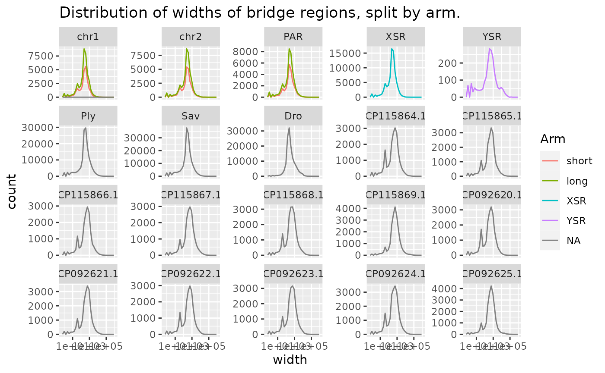
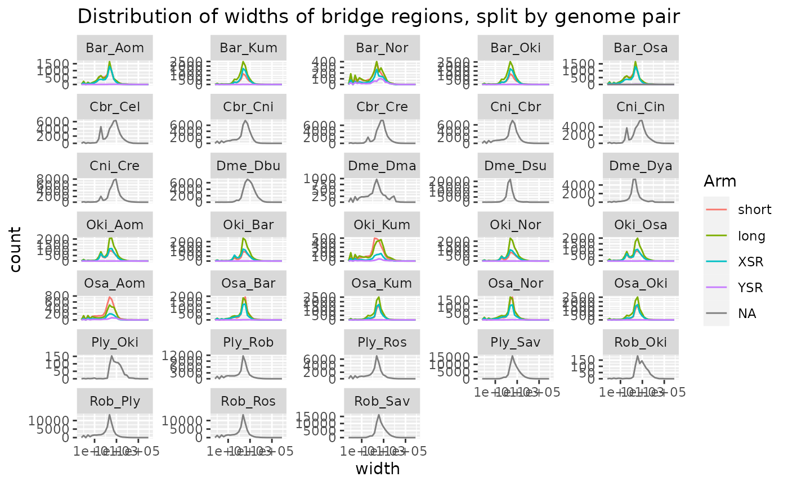
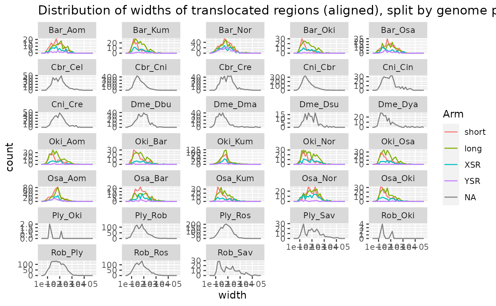
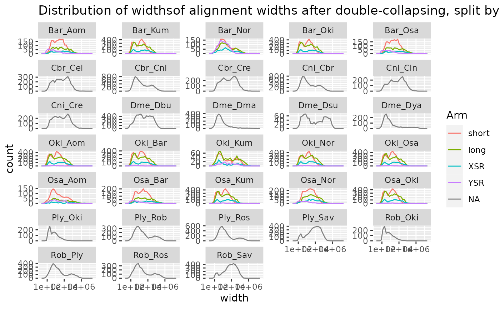
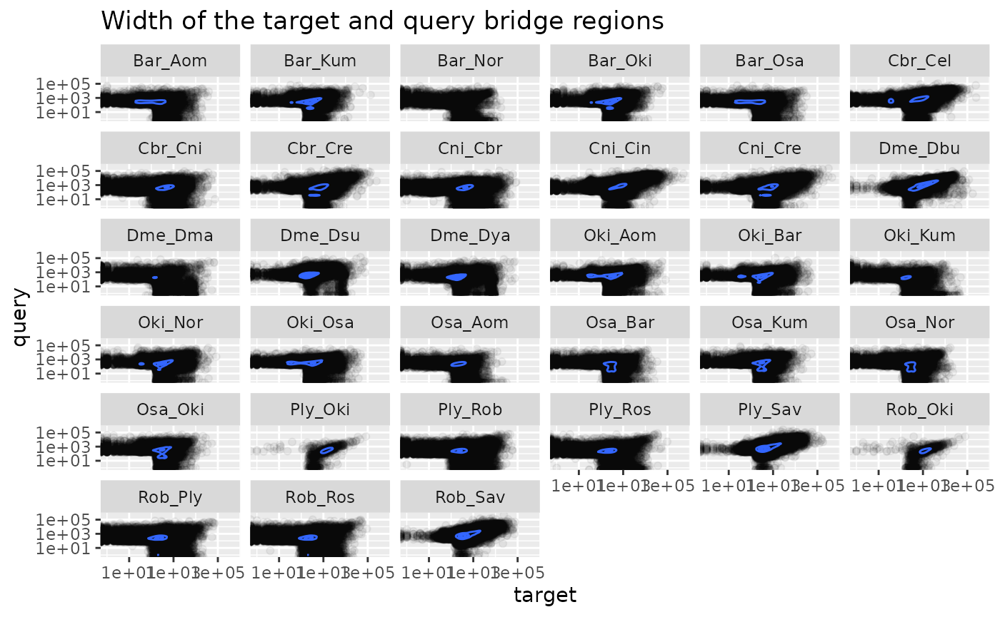
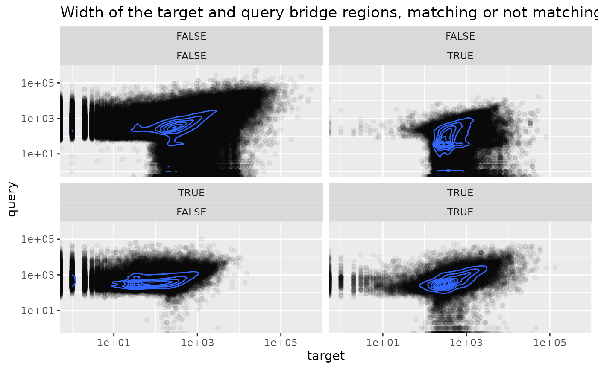
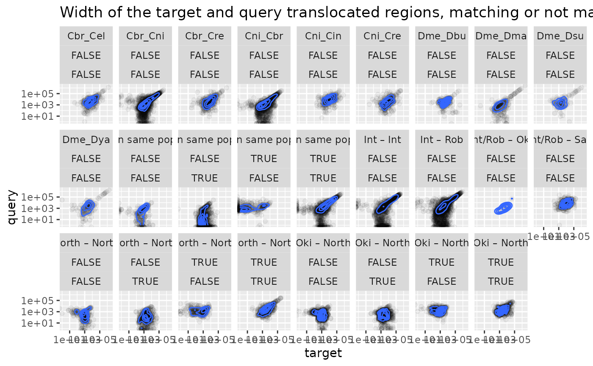
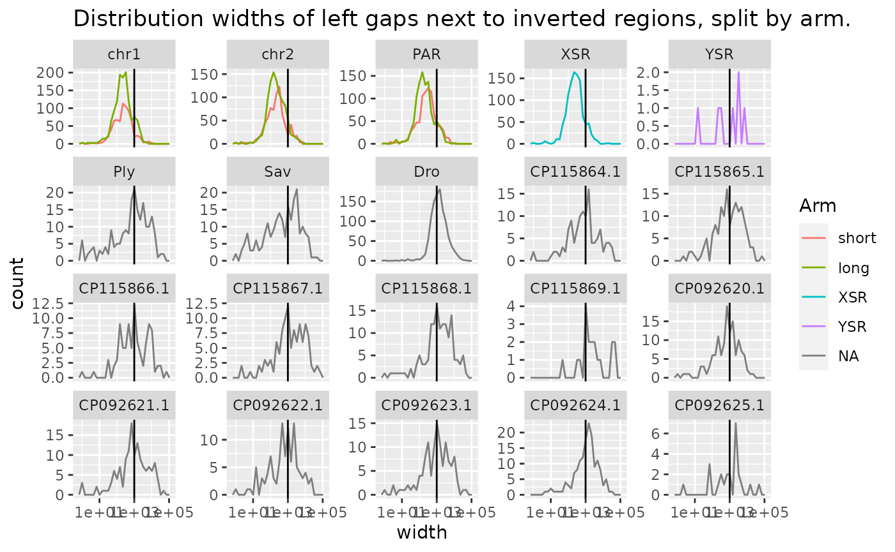

Width of the aligned and mapped regions.
Charles Plessy
24 November, 2021
Source:vignettes/RegionWidths.Rmd
RegionWidths.Rmd
knitr::opts_chunk$set(cache = TRUE, cache.lazy = FALSE)
knitr::opts_knit$set(verbose = TRUE)Load R pacakges and data
library('OikScrambling') |> suppressPackageStartupMessages()
library('ggplot2')
(genomes <- OikScrambling:::loadAllGenomes())## List of length 6
## names(6): Oki Osa Bar Kum Aom Nor
(load("BreakPoints.Rdata"))## [1] "gbs" "unal" "coa" "unmap" "unalMap" "tra"
## [7] "tra2" "coa2" "unmap2" "longShort"See vignette("LoadGenomicBreaks", package = "OikScrambling") for how the different GBreaks objects are prepared.
Precompute widths
widths <- SimpleList()
makeWidthsDF <- function (objList) {
lapply(names(objList), \(name) {
DF <- mcols(objList[[name]])
if (nrow(DF) == 0) return(DataFrame())
if (is.null(DF$Arm)) DF$Arm <- NA
DF$name <- name
DF$width <- width(objList[[name]])
DF$chr <- seqnames(objList[[name]]) |>
sub(pat = "Chr", rep = "chr") |>
sub(pat = "BNJZ.*", rep = "Ply") |>
sub(pat = "BNKA.*", rep = "Ros") |>
sub(pat = "BJTB.*", rep = "Rob") |>
sub(pat = "^R.*", rep = "Sav")
DF$query <- DF$score <- DF$rep <- DF$transcripts <- NULL
DF$dist <- OikScrambling:::compDistance(DF$name)
DF
}) |> do.call(what=rbind)
}
unal <- sapply(unal, \(gb) {gb$flag <- NA; gb}) |> SimpleList()
unmap <- sapply(unmap, \(gb) {gb$flag <- NA; gb}) |> SimpleList()
unalMap<-sapply(unalMap,\(gb){gb$flag <- NA; gb}) |> SimpleList()
widths$gbs <- makeWidthsDF(gbs) |> tibble::as_tibble()
widths$unal <- makeWidthsDF(unal) |> tibble::as_tibble()
widths$coa <- makeWidthsDF(coa) |> tibble::as_tibble()
widths$unmap <- makeWidthsDF(unmap) |> tibble::as_tibble()
widths$unalMap <- makeWidthsDF(unalMap) |> tibble::as_tibble()
widths$tra <- makeWidthsDF(tra) |> tibble::as_tibble()
widths$tra2 <- makeWidthsDF(tra2) |> tibble::as_tibble()
widths$coa2 <- makeWidthsDF(coa2) |> tibble::as_tibble()Width distribution of aligned and mapped regions
Aligned means “before coalescing” and mapped means “after coalescing”.
The distribution of alignment widths takes a bimodal appearance after collapsing. Is the small peak made of artefacts ? We will see shortly that the answer is no.
gg_freq_poly <- function(tibble) {
ggplot(tibble) +
aes(width) +
geom_freqpoly() +
scale_x_log10()
}
gg_freq_poly(rbind(widths$gbs |> as.data.frame()|> dplyr::mutate(what = "aligned"),
widths$unal |> as.data.frame()|> dplyr::mutate(what = "unaligned"),
widths$coa |> as.data.frame()|> dplyr::mutate(what = "mapped"),
widths$unalMap |> as.data.frame()|> dplyr::mutate(what = "mapped unaligned"),
widths$unmap |> as.data.frame()|> dplyr::mutate(what = "unmaped"),
widths$coa2 |> as.data.frame()|> dplyr::mutate(what = "doublecoalesced"))) +
aes(col = what) +
geom_freqpoly() +
scale_x_log10() +
facet_wrap(~name, scales = "free_y") +
ggtitle("Distribution of alignment width before and after collapsing")## Scale for 'x' is already present. Adding another scale for 'x', which will
## replace the existing scale.## `stat_bin()` using `bins = 30`. Pick better value with `binwidth`.
## `stat_bin()` using `bins = 30`. Pick better value with `binwidth`.
First, the distribution of widths is not the same on long and short arms. For this reason, it would be unwise to filter by width on some operations such as coalescing.
Aligned regions
gg_freq_poly(widths$gbs) +
aes(col=Arm) +
facet_wrap(~chr, scales = "free_y") +
ggtitle("Distribution of alignment widths before collapsing, split by arm.")## `stat_bin()` using `bins = 30`. Pick better value with `binwidth`.
gg_freq_poly(widths$gbs |> subset(chr == "chr1")) +
aes(col=Arm) +
facet_wrap(~name, scales = "free_y", ncol=5) +
ggtitle("Distribution of alignment widths on chr1 before collapsing, split by genome pair")## `stat_bin()` using `bins = 30`. Pick better value with `binwidth`.
Unaligned regions
gg_freq_poly(widths$unal) +
aes(col=Arm) +
facet_wrap(~chr, scales = "free_y") +
ggtitle("Distribution of unaligned regions width before collapsing, split by arm.")## `stat_bin()` using `bins = 30`. Pick better value with `binwidth`.
gg_freq_poly(widths$unal |> subset(chr == "chr1")) +
aes(col=Arm) +
facet_wrap(~name, scales = "free_y", ncol=5) +
ggtitle("Distribution of unaligned regions width on chr1 before collapsing, split by genome pair")## `stat_bin()` using `bins = 30`. Pick better value with `binwidth`.
Mapped (coalesced) regions
After coalescing, width distribution becomes clearly bimodal, when faceted by chromosome and arm type. There is a small peak under 500 bp, found on all arms except YSR. The second peak shows two different distributions for long and short arms.
gg_freq_poly(widths$coa) +
aes(col=Arm) +
facet_wrap(~chr, scales = "free_y") +
ggtitle("Distribution of alignment widths after collapsing, split by arm.")## `stat_bin()` using `bins = 30`. Pick better value with `binwidth`.
gg_freq_poly(widths$coa |> subset(chr == "chr1")) +
aes(col=Arm) +
facet_wrap(~name, scales = "free_y", ncol=5) +
ggtitle("Distribution of alignment widths on chr1 after collapsing, split by genome pair") +
geom_vline(xintercept = 500)## `stat_bin()` using `bins = 30`. Pick better value with `binwidth`.
Therefore, if the first peak represents events that we do not want to consider breaking synteny (either alignment artefacts or insertion/transpositions of short mobile elements), we can re-coalesce once after removing the shortest intervals.
Unmapped regions
gg_freq_poly(widths$unmap) +
aes(col=Arm) +
facet_wrap(~chr, scales = "free_y") +
ggtitle("Distribution of widths of ummapped regions, split by arm.")## `stat_bin()` using `bins = 30`. Pick better value with `binwidth`.
gg_freq_poly(widths$unmap |> subset(chr == "chr1")) +
aes(col=Arm) +
facet_wrap(~name, scales = "free_y", ncol=5) +
ggtitle("Distribution of widths of unmapped regions on chr1 after collapsing, split by genome pair") +
geom_vline(xintercept = 500)## `stat_bin()` using `bins = 30`. Pick better value with `binwidth`.Mapped unaligned regions
Note the short peak when comparing pairs within the same population.
gg_freq_poly(widths$unalMap) +
aes(col=Arm) +
facet_wrap(~chr, scales = "free_y") +
ggtitle("Distribution of widths of mapped unaligned regions, split by arm.")## `stat_bin()` using `bins = 30`. Pick better value with `binwidth`.
gg_freq_poly(widths$unalMap |> subset(chr == "chr1")) +
aes(col=Arm) +
facet_wrap(~name, scales = "free_y", ncol=5) +
ggtitle("Distribution of widths of unmapped regions on chr1 after collapsing, split by genome pair") +
geom_vline(xintercept = 500)## `stat_bin()` using `bins = 30`. Pick better value with `binwidth`.
Translocated regions
Whole region
Reminder: here we measure the distance between the two colinear pairs that are separated by the translocated pair.
gg_freq_poly(widths$tra) +
aes(col=Arm) +
ggtitle("Distribution of widths of translocated regions, split by arm.")## `stat_bin()` using `bins = 30`. Pick better value with `binwidth`.
gg_freq_poly(widths$tra) +
aes(col=dist) +
ggtitle("Distribution of widths of translocated regions, split by evolutionary distance")## `stat_bin()` using `bins = 30`. Pick better value with `binwidth`.
Whole region, after removal
Small peak in “same pop” disapears by design. Total number in the main peak also decreases, because they may pass the size filter on the query genome.
gg_freq_poly(widths$tra2) +
aes(col=Arm) +
ggtitle("Distribution of widths of translocated regions (after removal), split by arm.")## `stat_bin()` using `bins = 30`. Pick better value with `binwidth`.
gg_freq_poly(widths$tra2) +
aes(col=dist) +
ggtitle("Distribution of widths of translocated regions (after removal), split by evolutionary distance")## `stat_bin()` using `bins = 30`. Pick better value with `binwidth`.
Aligned, before removal
widths$tra_coa_aln <- makeWidthsDF(sapply(coa, \(gb) gb |> flagTranslocations() |> filterTranslocations())) |> tibble::as_tibble()
gg_freq_poly(widths$tra_coa_aln) +
aes(col=Arm) +
facet_wrap(~chr, scales = "free_y") +
ggtitle("Distribution of widths of translocated regions (aligned), split by arm.")## `stat_bin()` using `bins = 30`. Pick better value with `binwidth`.
gg_freq_poly(widths$tra_coa_aln) +
aes(col=dist) +
ggtitle("Distribution of widths of translocated regions (aligned), split by evolutionary distance")## `stat_bin()` using `bins = 30`. Pick better value with `binwidth`.
Aligned, after removal
widths$tra_coa2_aln <- makeWidthsDF(sapply(coa2, \(gb) gb |> flagTranslocations() |> filterTranslocations())) |> tibble::as_tibble()
gg_freq_poly(widths$tra_coa2_aln) +
aes(col=Arm) +
facet_wrap(~chr, scales = "free_y") +
ggtitle("Distribution of widths of translocated regions (aligned), split by arm.")## `stat_bin()` using `bins = 30`. Pick better value with `binwidth`.
gg_freq_poly(widths$tra_coa2_aln) +
aes(col=dist) +
ggtitle("Distribution of widths of translocated regions (aligned), split by evolutionary distance")## `stat_bin()` using `bins = 30`. Pick better value with `binwidth`.
Double-coalesced regions
gg_freq_poly(widths$coa2) +
aes(col=Arm) +
facet_wrap(~chr, scales = "free_y") +
ggtitle("Distribution of alignment widths after double-collapsing, split by arm.")## `stat_bin()` using `bins = 30`. Pick better value with `binwidth`.
gg_freq_poly(widths$coa2 |> subset(chr == "chr1")) +
aes(col=Arm) +
facet_wrap(~name, scales = "free_y", ncol=5) +
ggtitle("Distribution of alignment widths on chr1 after double-collapsing, split by genome pair") ## `stat_bin()` using `bins = 30`. Pick better value with `binwidth`.
Paired comparison of widths in target and query genomes.
GBreaks2widthTibble <- function(gb, pair = NULL) {
df <- as.data.frame(gb)
if(is.null(df$Arm)) df$Arm <- NA
if(is.null(df$rep)) df$rep <- NA
if(is.null(df$query.rep)) df$query.rep <- NA
tibble::tibble(target = df$width, query = df$query.width,
target.rep = ! is.na(df$rep), query.rep = ! is.na(df$query.rep), # TRUE if overlaps a repeat
pair = pair, Arm = df$Arm,
dist = OikScrambling:::compDistance(pair))
}
gbs.w2w <- do.call(rbind, lapply(names(gbs), \(name) GBreaks2widthTibble(gbs[[name]], pair = name)))
unalMap.w2s <- do.call(rbind, lapply(names(unalMap), \(name) GBreaks2widthTibble(unalMap[[name]], pair = name)))
tra.w2s <- do.call(rbind, lapply(names(tra), \(name) GBreaks2widthTibble(tra[[name]], pair = name)))
tra2.w2s <- do.call(rbind, lapply(names(tra2), \(name) GBreaks2widthTibble(tra2[[name]], pair = name)))
rbind (
aligned = table(paste( gbs.w2w$target.rep, gbs.w2w$query.rep)),
unalMap = table(paste(unalMap.w2s$target.rep, unalMap.w2s$query.rep)),
transpo = table(paste( tra.w2s$target.rep, tra.w2s$query.rep))
)## FALSE FALSE FALSE TRUE TRUE FALSE TRUE TRUE
## aligned 638349 58995 22808 34732
## unalMap 415681 84463 82180 35726
## transpo 6695 1973 2926 3016
ggPlotW2W <- function(tibble) {
ggplot(tibble) +
aes(target, query) +
geom_point(alpha = 0.05) +
geom_density_2d() +
scale_x_log10() +
scale_y_log10()
}
ggPlotW2W(gbs.w2w |> dplyr::filter(!is.na(Arm))) + facet_wrap(~Arm) +
ggtitle("Width of the target and query aligned regions")
ggPlotW2W(unalMap.w2s |> dplyr::filter(!is.na(Arm))) + facet_wrap(~Arm) +
ggtitle("Width of the target and query mapped unaligned regions")
ggPlotW2W(gbs.w2w) + facet_wrap(~pair) +
ggtitle("Width of the target and query aligned regions")## Warning: stat_contour(): Zero contours were generated## Warning in min(x): no non-missing arguments to min; returning Inf## Warning in max(x): no non-missing arguments to max; returning -Inf## Warning: stat_contour(): Zero contours were generated## Warning in min(x): no non-missing arguments to min; returning Inf## Warning in max(x): no non-missing arguments to max; returning -Inf## Warning: stat_contour(): Zero contours were generated## Warning in min(x): no non-missing arguments to min; returning Inf## Warning in max(x): no non-missing arguments to max; returning -Inf## Warning: stat_contour(): Zero contours were generated## Warning in min(x): no non-missing arguments to min; returning Inf## Warning in max(x): no non-missing arguments to max; returning -Inf## Warning: stat_contour(): Zero contours were generated## Warning in min(x): no non-missing arguments to min; returning Inf## Warning in max(x): no non-missing arguments to max; returning -Inf## Warning: stat_contour(): Zero contours were generated## Warning in min(x): no non-missing arguments to min; returning Inf## Warning in max(x): no non-missing arguments to max; returning -Inf## Warning: stat_contour(): Zero contours were generated## Warning in min(x): no non-missing arguments to min; returning Inf## Warning in max(x): no non-missing arguments to max; returning -Inf## Warning: stat_contour(): Zero contours were generated## Warning in min(x): no non-missing arguments to min; returning Inf## Warning in max(x): no non-missing arguments to max; returning -Inf## Warning: stat_contour(): Zero contours were generated## Warning in min(x): no non-missing arguments to min; returning Inf## Warning in max(x): no non-missing arguments to max; returning -Inf## Warning: stat_contour(): Zero contours were generated## Warning in min(x): no non-missing arguments to min; returning Inf## Warning in max(x): no non-missing arguments to max; returning -Inf## Warning: stat_contour(): Zero contours were generated## Warning in min(x): no non-missing arguments to min; returning Inf## Warning in max(x): no non-missing arguments to max; returning -Inf## Warning: stat_contour(): Zero contours were generated## Warning in min(x): no non-missing arguments to min; returning Inf## Warning in max(x): no non-missing arguments to max; returning -Inf## Warning: stat_contour(): Zero contours were generated## Warning in min(x): no non-missing arguments to min; returning Inf## Warning in max(x): no non-missing arguments to max; returning -Inf## Warning: stat_contour(): Zero contours were generated## Warning in min(x): no non-missing arguments to min; returning Inf## Warning in max(x): no non-missing arguments to max; returning -Inf## Warning: stat_contour(): Zero contours were generated## Warning in min(x): no non-missing arguments to min; returning Inf## Warning in max(x): no non-missing arguments to max; returning -Inf## Warning: stat_contour(): Zero contours were generated## Warning in min(x): no non-missing arguments to min; returning Inf## Warning in max(x): no non-missing arguments to max; returning -Inf## Warning: stat_contour(): Zero contours were generated## Warning in min(x): no non-missing arguments to min; returning Inf## Warning in max(x): no non-missing arguments to max; returning -Inf## Warning: stat_contour(): Zero contours were generated## Warning in min(x): no non-missing arguments to min; returning Inf## Warning in max(x): no non-missing arguments to max; returning -Inf## Warning: stat_contour(): Zero contours were generated## Warning in min(x): no non-missing arguments to min; returning Inf## Warning in max(x): no non-missing arguments to max; returning -Inf
ggPlotW2W(gbs.w2w) + facet_wrap(~dist) +
ggtitle("Width of the target and query aligned regions")## Warning: stat_contour(): Zero contours were generated## Warning in min(x): no non-missing arguments to min; returning Inf## Warning in max(x): no non-missing arguments to max; returning -Inf## Warning: stat_contour(): Zero contours were generated## Warning in min(x): no non-missing arguments to min; returning Inf## Warning in max(x): no non-missing arguments to max; returning -Inf## Warning: stat_contour(): Zero contours were generated## Warning in min(x): no non-missing arguments to min; returning Inf## Warning in max(x): no non-missing arguments to max; returning -Inf
ggPlotW2W(unalMap.w2s) + facet_wrap(~pair) +
ggtitle("Width of the target and query mapped unaligned regions")
ggPlotW2W(tra.w2s |> dplyr::filter(!is.na(Arm))) + facet_wrap(~pair) +
ggtitle("Width of the target and query translocated regions")
ggPlotW2W(tra.w2s |> dplyr::filter(!is.na(Arm))) + facet_wrap(~dist) +
ggtitle("Width of the target and query translocated regions")
ggPlotW2W(tra2.w2s |> dplyr::filter(!is.na(Arm))) + facet_wrap(~pair) +
ggtitle("Width of the target and query translocated regions")
ggPlotW2W(tra2.w2s |> dplyr::filter(!is.na(Arm))) + facet_wrap(~dist) +
ggtitle("Width of the target and query translocated regions")
ggPlotW2W(gbs.w2w) +
facet_wrap(~query.rep + target.rep) +
ggtitle("Width of the target and query aligned regions, matching or not matching repeats")
ggPlotW2W(unalMap.w2s) +
facet_wrap(~query.rep + target.rep) +
ggtitle("Width of the target and query mapped unaligned regions, matching or not matching repeats")
ggPlotW2W(tra.w2s) +
facet_wrap(~dist + query.rep + target.rep, nrow = 3) +
ggtitle("Width of the target and query translocated regions, matching or not matching repeats")## Warning: stat_contour(): Zero contours were generated## Warning in min(x): no non-missing arguments to min; returning Inf## Warning in max(x): no non-missing arguments to max; returning -Inf
ggplot(unalMap.w2s) +
aes(target / query, col = paste(target.rep, query.rep) ) +
scale_x_log10() +
geom_freqpoly() +
ggtitle("In presence of a repeat, target width tends to be longer than query") +
geom_vline(xintercept = 1)## `stat_bin()` using `bins = 30`. Pick better value with `binwidth`.
Structural variants
Width of inverted regions
We know that we can detect more inversions after coalescing and removing translocations (vignette("Inversions", package = "OikScrambling")).
Many inversions are shorter than 1 kbp. Size may differ slightly between long and short arms.
invs.gbs <- sapply(gbs, function(gb) filterInversions(flagInversions(gb))) |> SimpleList()
invs.coa <- sapply(coa, function(gb) filterInversions(flagInversions(gb))) |> SimpleList()
invs.coa2 <- sapply(coa2, function(gb) filterInversions(flagInversions(gb))) |> SimpleList()
sapply(invs.gbs, length)## Oki_Osa Oki_Bar Oki_Kum Oki_Aom Oki_Nor Osa_Oki Osa_Bar Osa_Kum Osa_Aom Osa_Nor
## 614 604 89 608 541 613 241 620 56 212
## Bar_Oki Bar_Osa Bar_Kum Bar_Aom Bar_Nor Ply_Ros Ply_Rob Ply_Sav Ply_Oki Rob_Ros
## 597 237 608 237 19 42 58 16 0 50
## Rob_Ply Rob_Sav Rob_Oki
## 58 14 0
sapply(invs.coa, length)## Oki_Osa Oki_Bar Oki_Kum Oki_Aom Oki_Nor Osa_Oki Osa_Bar Osa_Kum Osa_Aom Osa_Nor
## 670 675 105 665 591 671 321 678 73 275
## Bar_Oki Bar_Osa Bar_Kum Bar_Aom Bar_Nor Ply_Ros Ply_Rob Ply_Sav Ply_Oki Rob_Ros
## 667 319 686 319 24 51 71 92 0 65
## Rob_Ply Rob_Sav Rob_Oki
## 70 92 0
sapply(invs.coa2, length)## Oki_Osa Oki_Bar Oki_Kum Oki_Aom Oki_Nor Osa_Oki Osa_Bar Osa_Kum Osa_Aom Osa_Nor
## 704 705 122 695 611 706 330 708 79 279
## Bar_Oki Bar_Osa Bar_Kum Bar_Aom Bar_Nor Ply_Ros Ply_Rob Ply_Sav Ply_Oki Rob_Ros
## 695 327 711 335 27 55 76 92 0 71
## Rob_Ply Rob_Sav Rob_Oki
## 77 92 0
# Sanity check that we detect inversions on both strands
sapply(invs.coa2, \(x) {summary(decode(strand(x)))})## Oki_Osa Oki_Bar Oki_Kum Oki_Aom Oki_Nor Osa_Oki Osa_Bar Osa_Kum Osa_Aom
## + 381 365 33 369 317 382 186 367 38
## - 323 340 89 326 294 324 144 341 41
## * 0 0 0 0 0 0 0 0 0
## Osa_Nor Bar_Oki Bar_Osa Bar_Kum Bar_Aom Bar_Nor Ply_Ros Ply_Rob Ply_Sav
## + 147 354 182 365 164 7 2 6 51
## - 132 341 145 346 171 20 53 70 41
## * 0 0 0 0 0 0 0 0 0
## Ply_Oki Rob_Ros Rob_Ply Rob_Sav Rob_Oki
## + 0 5 5 52 0
## - 0 66 72 40 0
## * 0 0 0 0 0
widths$invs.gbs <- makeWidthsDF(invs.gbs) |> tibble::as_tibble()
widths$invs.coa <- makeWidthsDF(invs.coa) |> tibble::as_tibble()
widths$invs.coa2 <- makeWidthsDF(invs.coa2) |> tibble::as_tibble()
gg_freq_poly(widths$invs.gbs) +
aes(col=Arm) +
ggtitle("Distribution of alignment widths for inverted regions, using aligned regions, split by arm.") +
geom_vline(xintercept = 1000)## `stat_bin()` using `bins = 30`. Pick better value with `binwidth`.
gg_freq_poly(widths$invs.coa) +
aes(col=Arm) +
ggtitle("Distribution of alignment widths for inverted regions, using mapped regions, split by arm.") +
geom_vline(xintercept = 1000)## `stat_bin()` using `bins = 30`. Pick better value with `binwidth`.
gg_freq_poly(widths$invs.coa2) +
aes(col=Arm) +
ggtitle("Distribution of alignment widths for inverted regions, using doublemapped regions, split by arm.") +
geom_vline(xintercept = 1000)## `stat_bin()` using `bins = 30`. Pick better value with `binwidth`.
gg_freq_poly(widths$invs.coa2) +
facet_wrap(~dist, scale="free") +
ggtitle("Distribution of alignment widths for inverted regions, using doublemapped regions, split by comparison") +
geom_vline(xintercept = 1000)## `stat_bin()` using `bins = 30`. Pick better value with `binwidth`.
Width of gaps next to the inverted regions
inv.lgaps <- sapply(coa, leftInversionGaps) |> SimpleList()
inv.lgaps[ 1:5] <- sapply(inv.lgaps[ 1:5], flagLongShort, longShort$Oki)
inv.lgaps[ 6:10] <- sapply(inv.lgaps[ 6:10], flagLongShort, longShort$Osa)
inv.lgaps[11:15] <- sapply(inv.lgaps[11:15], flagLongShort, longShort$Bar)
sapply(inv.lgaps, length)## Oki_Osa Oki_Bar Oki_Kum Oki_Aom Oki_Nor Osa_Oki Osa_Bar Osa_Kum Osa_Aom Osa_Nor
## 669 675 96 665 591 669 319 678 69 274
## Bar_Oki Bar_Osa Bar_Kum Bar_Aom Bar_Nor Ply_Ros Ply_Rob Ply_Sav Ply_Oki Rob_Ros
## 666 315 685 315 22 46 65 92 0 61
## Rob_Ply Rob_Sav Rob_Oki
## 67 92 0
widths$invs.lgaps <- makeWidthsDF(inv.lgaps) |> tibble::as_tibble()
gg_freq_poly(widths$invs.lgaps) +
aes(col=Arm) +
facet_wrap(~chr, scales = "free_y") +
ggtitle("Distribution widths of left gaps next to inverted regions, split by arm.") +
geom_vline(xintercept = 1000)## `stat_bin()` using `bins = 30`. Pick better value with `binwidth`.